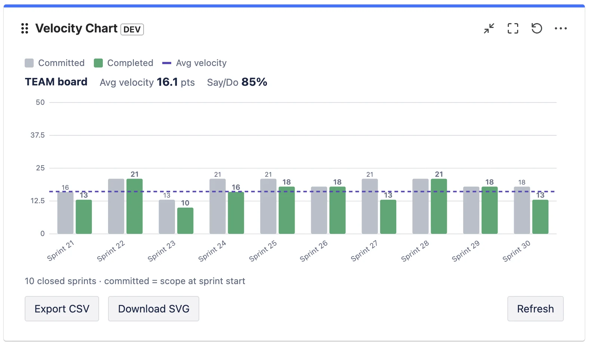

What a velocity chart actually shows
A velocity chart plots your recent completed sprints. For each sprint it draws two bars side by side, and Atlassian defines them precisely in the velocity chart documentation:
- Commitment (the grey bar) — “the total estimate of all work items in the sprint when it begins.” This is the scope the team took on at sprint start.
- Completed (the green bar) — “the total completed estimates when the sprint ends.” This is what was actually finished.
Velocity itself is the average of those completed values: “Velocity is calculated by taking the average of the total completed estimates over the last several sprints.” Most velocity charts draw that average as a horizontal line across the bars so you can see, at a glance, the rate the team tends to deliver at.

The estimate can be in story points (by far the most common), in issue count, or in another estimation field, depending on how your board is configured. Whatever the unit, the chart is always comparing the same thing: what you planned versus what you shipped.
How to read it: four patterns
Don't read a velocity chart sprint by sprint — read the shape across the last several sprints. Four patterns tell you almost everything.
1. Completed sits just below commitment, consistently
This is the healthy default. Teams rarely finish 100% of what they pull in, and a small, steady gap (say completed at 85–95% of commitment) means your planning is realistic. The average line is flat and the bars cluster around it. You can forecast confidently.
2. Completed is far below commitment, sprint after sprint
Chronic over-commitment. The team consistently plans more than it finishes. The fix is not “work harder” — it's to commit to less, closer to the proven completed average. Over-commitment quietly erodes trust with stakeholders because every sprint looks like a miss.
3. The bars swing wildly from sprint to sprint
High variance — 30 points, then 8, then 22 — usually means something other than the team's pace is moving the number: inconsistent estimation, mid-sprint scope changes, holidays, or carrying large unfinished stories between sprints. A jumpy chart is a signal to look at your process, and it makes forecasting from a single average unreliable (use a range instead — see below).
4. A slow, steady climb
A gradual upward trend over many sprints is the good kind of improvement: the team is gelling, estimates are stabilising, impediments are being removed. Beware of a sudden jump, though — that's more often re-estimation or scope-counting changes than a real productivity gain.
The one ratio worth adding: divide completed by committed for each sprint. That's your say/do ratio (sometimes called commitment reliability). A team averaging 60% is over-committing; a team consistently above 100% is sandbagging its commitment. Around 80–100% is the sweet spot. We cover this in depth in Sprint Predictability and the Say/Do Ratio.
Where to find the velocity chart in Jira
In a company-managed project, open your Scrum board, then Reports → Velocity Chart. In a team-managed project the equivalent is the velocity report, which can measure velocity in story points or in number of work items. Both require the Sprints feature and at least one completed sprint.
There's one structural limitation worth knowing up front: the native velocity chart lives inside a single board's reports. There is no native Jira dashboard gadget for velocity, so you can't put it next to your sprint-health, burndown, and filter gadgets on a shared dashboard — you have to navigate into each board's report separately. That's the gap teams most often fill with a Marketplace app; more on that at the end. We compared the native report and the app option in detail in Velocity for Team-Managed Projects.
Using velocity for sprint planning
Velocity's real job is forecasting — answering “how much can we realistically take into the next sprint?” and “roughly how many sprints will this epic take?” Here's the disciplined way to use it.
Plan with a range, not a single number
Take your last three to six completed sprints. Instead of averaging them into one figure and treating it as gospel, note the low and high. If recent completed values are 18, 22, 25, 19, 24, your realistic capacity is “about 18–25, plan around 21.” A range respects the natural variation in real teams and stops planning from becoming false precision.
Forecast epics as a range of sprints
If an epic is estimated at 120 points and your velocity range is 18–25, that's roughly 5 to 7 sprints. Communicating “5–7 sprints” is far more honest — and more useful — than “6 sprints” stated with fake confidence.
Subtract known interruptions
Velocity assumes a roughly normal sprint. Adjust capacity down for public holidays, people on leave, or a planned support rotation. Don't permanently lower velocity for a one-off; just plan that specific sprint lighter.
Rule of thumb: a brand-new team has no velocity yet. Run two or three sprints, deliberately under-committing, before you trust the chart to plan with. The Scrum literature and Atlassian's own guide to velocity both stress that velocity is a tool the team builds up over time, not a number you set on day one.
Four mistakes that make velocity lie
1. Comparing velocity between teams
This is the big one. Story points are relative — each team estimates against its own past work, not an absolute scale. One team's 8 is another team's 3. Comparing two teams' velocities, or worse, ranking teams by velocity, is meaningless and actively harmful: it pushes teams to inflate estimates. Velocity is only ever comparable to the same team's history.
2. Treating velocity as a target to maximise
The moment velocity becomes a goal, it stops being a useful measure (a textbook case of Goodhart's law). Teams hit a velocity target by padding estimates, not by delivering more value. The objective is a stable, sustainable velocity that supports reliable forecasts — not an ever-rising number.
3. Ignoring the “Done” definition
The completed bar only counts issues the board considers done — by default, just the last column. If your team also has statuses like Released, QA Passed, or Accepted that genuinely mean finished, and they aren't mapped as done, your velocity is silently under-reported every sprint. Get your Definition of Done and your board's status mapping aligned.
4. Forgetting that sub-tasks are excluded
Atlassian's native velocity chart explicitly does not include estimates from sub-tasks. If your team does a lot of estimating at the sub-task level, the native chart will understate your throughput. You either need to estimate at the story level, or use a tool that can optionally include sub-tasks.
Putting velocity where the team actually looks
The single most common practical complaint about Jira velocity isn't the maths — it's the location. The chart is buried in one board's reports, while the team's shared view of the sprint is the dashboard. Stand-ups happen on the dashboard; reviews happen on the dashboard; velocity does not.
That's the gap Velocity Chart for Jira fills. It's a Forge-native dashboard gadget that draws the same committed-vs-completed chart, with the average line, on any dashboard — and adds the things the native report can't: a configurable Definition of Done, a choice of estimation field, optional sub-task inclusion, the say/do predictability number, and the ability to compare several boards in one gadget. It works on both company-managed and team-managed Scrum boards, and it's read-only — your data never leaves Atlassian.
Frequently asked questions
What does a velocity chart show in Jira?
Two bars per completed sprint: commitment (the total estimate at sprint start) and completed (the total estimate finished by sprint end). Velocity is the average of the completed values over the last several sprints, usually drawn as a line.
What is a good velocity in Jira?
There's no universal number — velocity is in a team's own relative story points. A good velocity is stable and predictable (completed roughly matching commitment over time), not high. Never compare the raw velocity of two different teams.
How many sprints should a velocity forecast be based on?
The last three to six completed sprints. Fewer than three is too noisy; going much further back risks mixing in a different team or way of working. Use the low-to-high range, not just the average.
Why is my velocity chart empty or showing zero?
Usually one of two reasons: the board is a Kanban board (no sprints, so no velocity), or your issues are estimated in a different field than the chart reads. Velocity needs a Scrum board with at least one completed sprint, and the estimation field must match what your team actually uses.
Does Jira have a velocity dashboard gadget?
Not natively — the velocity chart lives in a single board's Reports section, with no built-in dashboard gadget. To show velocity on a dashboard you use a Marketplace app such as Velocity Chart for Jira.
See your velocity on any dashboard
Velocity Chart for Jira puts committed-vs-completed, the average line and say/do on any dashboard — with your own Definition of Done, on company- and team-managed boards.
Get it on Marketplace →